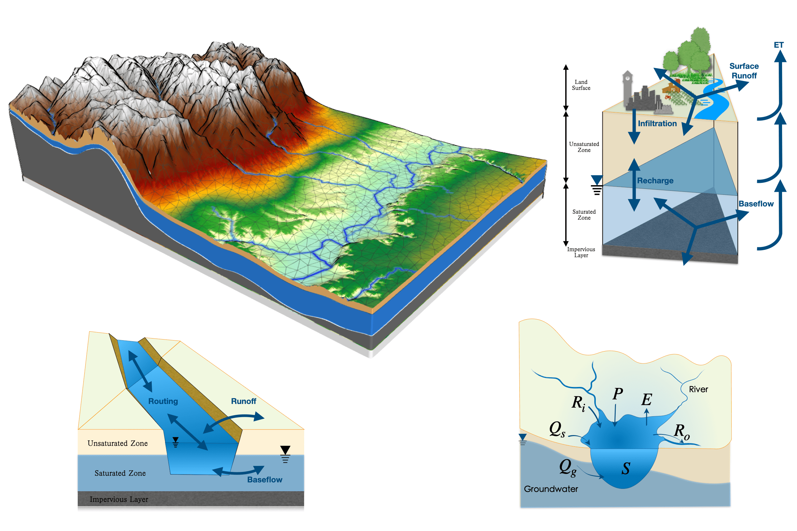

SHUD水文模型 (ver 2.0)
理论、方法和案例
2024-11-25
前言
本书涵盖了SHUD模型的发展、基本理论、技术细节、应用案例。 在介绍模型本身的同时，本书还旨在将以水为媒介的自然过程在水文和地球工作中展示。
本书描述内容根据SHUD模型版本迭代，当前版本为v2.0 2023版。 更新周期约6个月。

SHUD模型
“云气西行，云云然冬夏不辍；水泉东流，日夜不休；上不竭，下不满；小为大，重为轻；圜道也。”
——吕不韦 《吕氏春秋》, 公元前239年(?)
“上善若水，水善利万物而不争”
——老子《道德家》，公元前四世纪
科学技术是人工的演化。理论物理学家的理论验证需要等待宇宙现象的发生。科学家穷其一生也无法验证某些理论——因为自然现象的发生概率非常低。所以，人工实验就可以大幅度提高这种现象的发生概率。
——陈平，2019